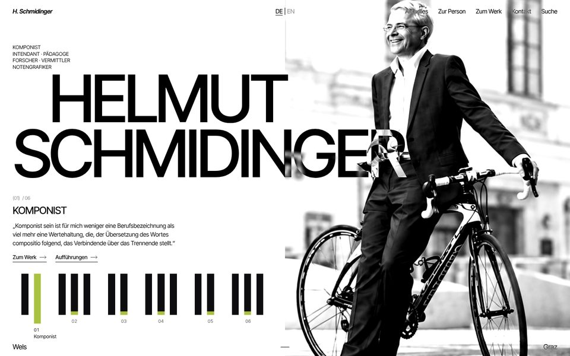
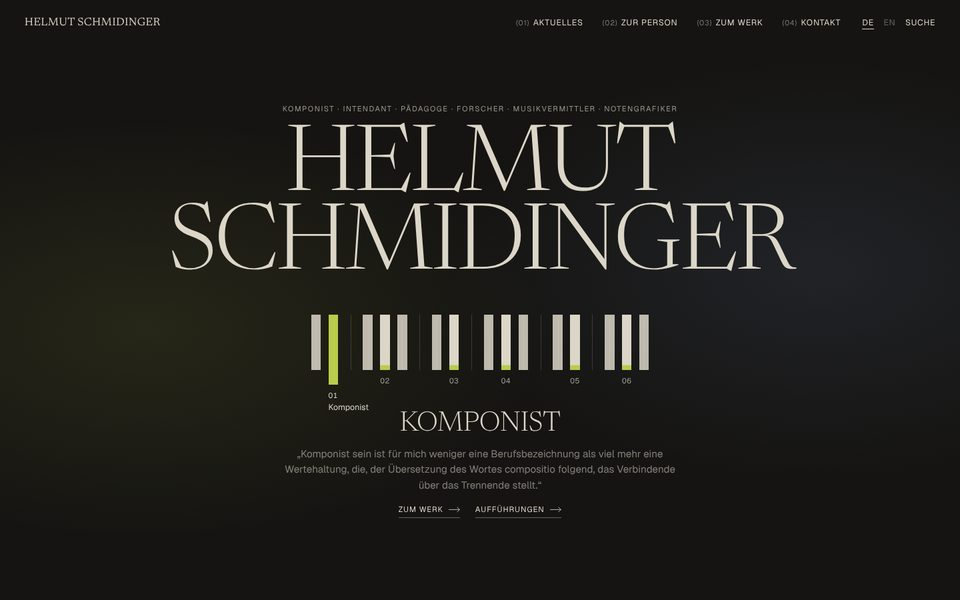
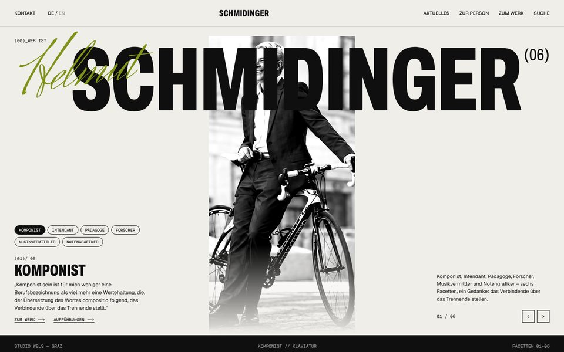
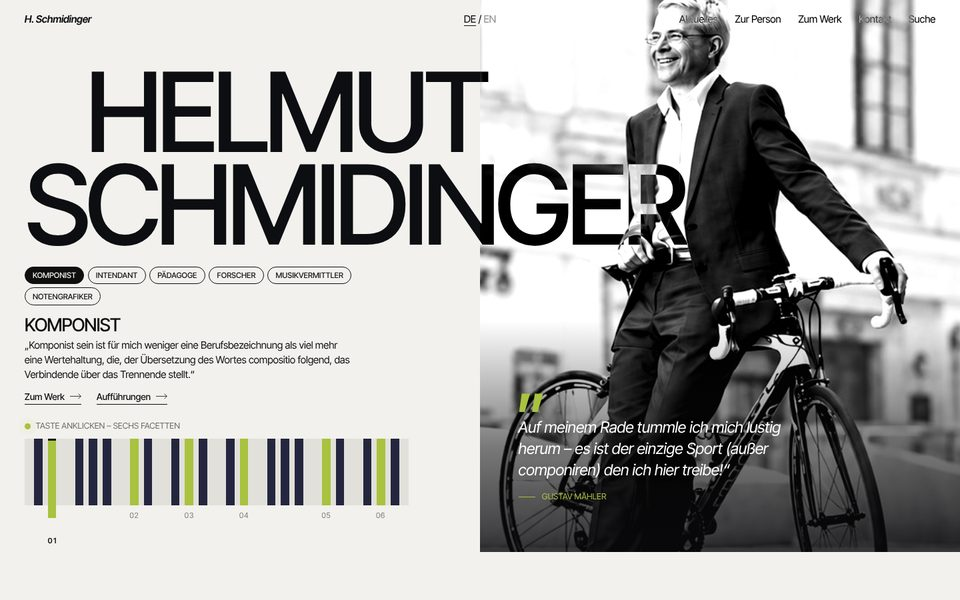
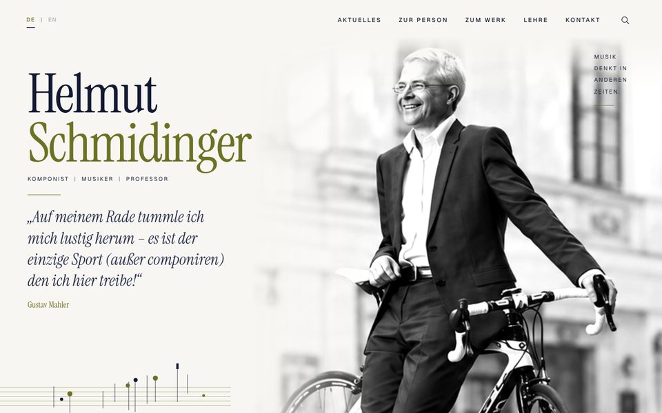

Startseite –
4 Richtungen
Alle Versionen nutzen die Klaviatur vom Briefpapier als Navigation: Jede hervorgehobene Taste ist eine Facette (Komponist, Intendant, Pädagoge, Forscher, Musikvermittler, Notengrafiker). Darüberfahren oder Antippen zeigt Text und Links. Unten am Bildschirm lässt sich jederzeit zwischen den Versionen wechseln.

Kontrast
Weiß und Schwarz, riesiger Name über geteiltem Bild, der sich über dem Foto invertiert. Sehr reduziert, sehr porträthaft.
- Schrift
- Inter Tight
- Farben
- Weiß · Schwarz · Lindgrün

Bühne
Dunkle „Bühne“ und Sand im Wechsel, große Versal-Serif, nummerierter Index (01)–(06). Am nächsten an Konzerthaus und Festival.
- Schrift
- Newsreader + Geist
- Farben
- Anthrazit · Sand · Lindgrün

Plakat
Extra-schmale fette Grotesk, Handschrift-Akzent, schwarze Bänder, Mono-Labels. Facetten zusätzlich als Tags und mit Pfeilen durchblätterbar.
- Schrift
- Archivo Condensed + Geist Mono, Herr Von Muellerhoff
- Farben
- Papier · Schwarz · Lindgrün

A + C
Hero aus A mit Mahler-Zitat im Bild und Facetten-Pills aus C. Die Klaviatur ist an die Original-Website angelehnt und reagiert auf Klick. Termine, Wortwolke und Footer kommen aus C.
- Schrift
- Inter Tight (wie A)
- Farben
- Papier · Nachtblau · Lindgrün

Original, neue Schriften
Layout unverändert. Statt Playfair Display + Jost jetzt Instrument Serif + Geist, dadurch zeitgemäßer und weniger „Template“.
- Schrift
- Instrument Serif + Geist
- Farben
- wie bisher
Konzeptänderungen (Meeting)
- „Lehre“ nicht mehr im Menü. Ersatz: Facette „Pädagoge“ mit Links zur KUG.
- Facetten: Titel, 2–3 Zeilen Text, 0–2 externe Links, Bild optional.
- „Bibliographie“ entfällt, stattdessen PDF „Publikationen“ bei „Forscher“.
- Kontexte: Feld pro Werk und Wortwolke (Größe = Anzahl Werke).
Hinweise
- Fotos sind Platzhalter. Das Querformat-Foto stammt aus der alten Website und ist niedrig aufgelöst. Für den Livegang brauchen wir die Originale vom Fotografen.
- Facetten-Texte für Pädagoge, Forscher und Musikvermittler folgen vom Kunden.
- Wörter in der Wortwolke sind Beispiele.
- Alle Schriften sind gratis (Open Font License) und lokal eingebunden, ohne Google-Server.